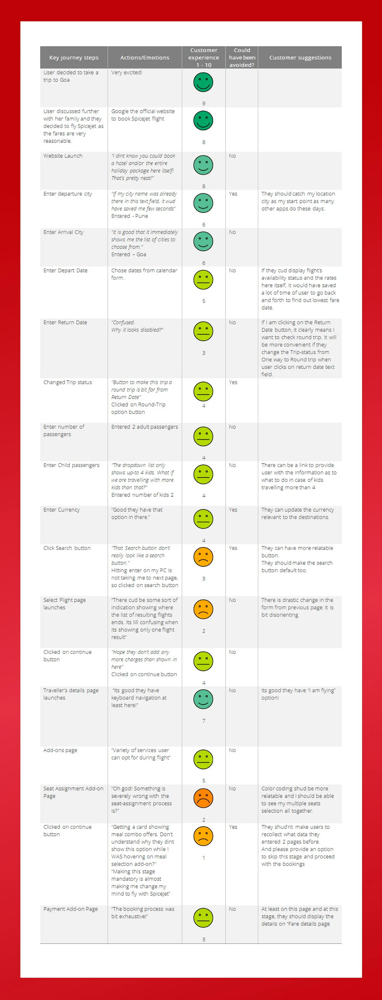
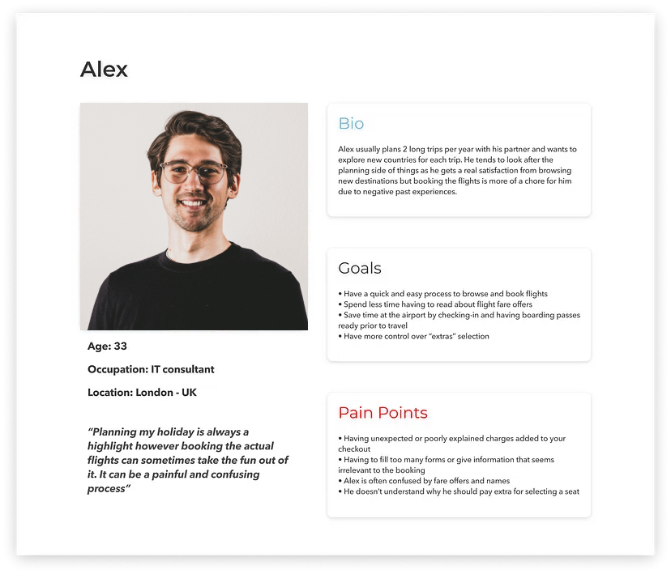

Project Overview
Role
UX/UI Designer
User research, Interaction design, Visual design, prototyping, testing
Brief
The case study explores the website's design, functionality,
and performance, with a focus on user experience and customer satisfaction.
'Salman travels'
aims to provide a
seamless and user-friendly platform for customers to search, compare, and book flights from
various airlines by offering a wide range of features, including real-time flight information,
competitive pricing and multiple payment options.
Our client is a start-up flight booking platform. They’re looking to create an online experience that
is fast, easy and intuitive: one that’s based on a deep understanding of their target users.
I was responsible for designing a new website for the client, focusing specifically on the flight booking process.
Goals
- The primary objective of the website is to offer a simple and beautiful interface that allows users to easily search and book flights.
- The goal is to create a seamless user experience, reducing the time and effort required to find suitable flights.
- The website aims to offer a comprehensive range of flight options to customers. This includes various airlines, departure times, and prices to cater to the diverse needs of travelers.
- The platform focuses on providing competitive pricing for flights, offering customers the best possible deals.
Tools
Figma, Miro, Photoshop, Illustrator
Duration
12 Weeks
Design Process
Research
- Context study
- Desk Research
- User Interviews
- Business Stakeholder Interviews
- Current Booking Metrics
Definition
- Problem Statement
- User Journey Map
- Persona
- KPIs For Success
Ideation
- Feature narrative
- Sketches and diagrams
- Wireframes
Design
- Visual design
- User testing
- Stakeholder review
Testing
- Business Feedback
- Metric Analysis
Context
In today's fast-paced world, travel has become an integral part of our lives.
People are constantly seeking convenient
and efficient ways to plan their trips. However, the process of booking flights
can often be overwhelming and time-consuming. In such a scenario, a user-friendly and
comprehensive flight booking website emerges as a solution to simplify the
travel planning process. Our flight booking website
serves as a one-stop platform that aggregates flight data from multiple airlines, providing a
comprehensive range of options to choose from.
Moreover, having used many airline
websites myself over the years, I came to realise that none of them would offer a similar booking
experience. It would be easy to assume that the user has a simple goal in mind — find and
book tickets!
Desk Research & competitive benchmark
I decided to kick off the research phase by looking into existing studies and gather data which would confirm or refute my assumptions. I managed to uncover some interesting findings around user’s goals and pain points. I went on to carry out a competitor analysis with 2 different websites: Easyjet and Spicejet
EasyJet: it offers a good balance between intuitive design and usability. It is visually pleasing and menus are well designed. However, once flights are selected, we can notice the focus on upselling extras with the abundance of upselling suggestions. The “Extras” screen cannot be skipped which is rather frustrating. A lot of steps were also required to register the passenger details.
Spicejet has a loyal suite of domestic travelers in India who choose the brand due to its affordable fares and high frequency of flights. Very few people opt for value-added services.
User interviews & Usability Testing
The next step was to carry out user interviews to gain insights on how the participants would interact with airline apps. Following the interviews, the participants were also asked to participate in usability testing using existing websites.
4 participants were recruited in an A/B testing format, participants were asked to complete the same trip booking on two different websites — EasyJet and Spicejet.
Pain ponts / Key Findings
- The website is not responsive. Yes, you read it right!
- Usability issues with UI control like location picker, date picker, color contrast, accessibility, etc.
- Too much information is being asked, which does not have business significance.
- Website navigation is very poor, and information is arranged based on business logic, not the user.
- While the users’ goal is to aim for the cheapest fares, they would not mind paying a little extra for better timings.
- The workflow from search to payment is lengthy and takes at least 40 mins for a new user to complete.
- Limited payment options force the user to abandon the journey or continue via phone booking.
Current flight booking metrics:
- 58% via marketplaces like cleartrip.com, makemytrip.com, yatra.com, and booking.com.
- 28% via agents.
- 10% via the airline booking website.
- 4% via the airline call center.
Also, about 40% of all users who booked on the website ended up calling the phone booking number to verify their booking, complete payment, or understand how they need to book online.
Definition
Problem Statement
" I am a domestic traveller. I am trying to book a flight ticket on Spicejet.com, but I am unable to complete my booking because the booking process is too lengthy. "
User journey
The whole booking process implies a lot of menus. I arranged the data in categories that reflect each step a user would usually take during a booking process.
User personas
Based on the information gathered from my research, I wanted to create a persona that could
reflect the goals, needs and behaviours amongst the targeted audience. It helped me focus on tackling
the problems.
Please meet Alex! An IT consultant who enjoys travelling abroad a couple of times each year.
Target KPIs
- Increase in the conversion down the funnel from the homepage to payment success.
- Increase in the bookings per user cycle. (More two-way bookings rather than one-way).
- Increase the task completion rate (Booking form completion, search selection, add-ons selection, travelers details, payment completion).
- Increase in the sale of add-ons.
- Better avg. pricing than competitors on major routes.
- Increase the visits to content pages (Add-ons, deals and offers, promotions, corporate activities).
- Increase in mobile user conversions.
- Increase in customer satisfaction score.
User Flow
After defining the goals and deciding on the features to include, I went on to establish the information architecture of the website by using a User Flow. I built an ideal workflow based on the three major stages: search, book, and purchase.

Low Fidelity Sketches
With the key features and user flow defined , I started to capture my ideas by sketching low-fidelity screens using pen and paper. It enabled me to examine my ideas before moving onto digital wireframes.
I use drawing to get all of my thoughts down on paper, no matter what they are, and see what stays. I ask myself questions, scribble down ideas to think about, and build a list of areas I need to research more.
Wireframes
I went on to making low-fidelity grayscale prototypes in Figma once I was satisfied with my sketches. This allows me to make sure that everything I want to add fits inside the specified time period. I designed more than 10 distinct screen states to demonstrate the process from beginning to end, emphasizing the interactions and material that would be presented.
I generated formal handoff wireframe documentation when the designs were completed, documenting in detail every interaction the tool would make. This contained every screen state as well as any other relevant information that the developer could find useful.
- Homepage & Flight Search Form :The Flight Search Form focuses on the key details required to browse flight options: departure & arrival airports, dates and amount of passengers.
- Date Selection : Majority of users would be looking to book the cheapest flights possible. As a result, I wanted to add price information early on in the booking process. While choosing dates, and whether the users have specific dates in mind or only intend to browse, I incorporated the flights average price for one passenger for each day.
- Flight Selection :The research showed that users had different expectations on how the flight results should appear. I chose to display the flights by time of departure as a default option as users are usually willing to make a trade off between price and timings when making their selection.
- Passenger Details Form :As mentioned before, users can be easily frustrated when forms are asking for too many details, and some of them can also look irrelevant. For those reasons, I kept the form as simple as possible and only asked for titles and names. The email address is required for the main booker in order to get a digital receipt.
Final Design
Finally, I created the final version of the website, which has a more improved user interface.